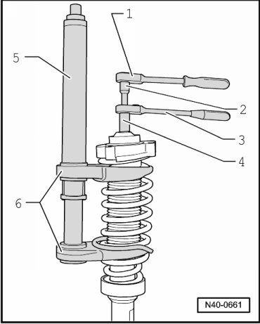
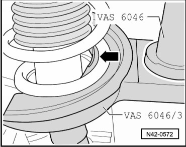
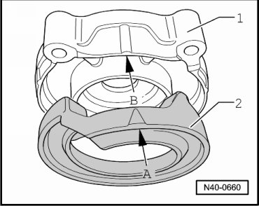
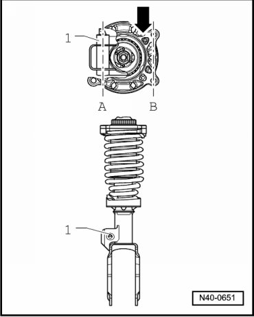
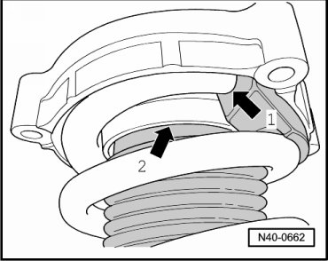
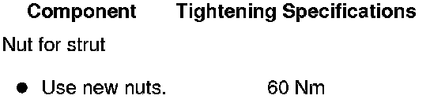

Front Suspension
Strut
Special tools, testers and auxiliary items required
• Torque wrench (VAG 1332)
• Spring compressor (VAS 6046)
• Spring holder (VAS 6046/3)
• Shock absorber set (T10001)
- Remove strut. Refer to --> [ Strut ] Strut.
Coil Spring, Removing
- Pre-tension coil spring far enough until upper spring plate is free.

- Remove hex nut from piston rod.
- Remove components of suspension strut and coil spring using spring tensioner (VAS 6046) and spring support f/VAS6046 (VAS 6046/3).
1 Commercially available ratchet
2 (T10001/14)
3 (T10001/11)
4 (T10001/3)
5 (VAS 6046)
6 (VAS 6046/3)
CAUTION!
First pre-load spring far enough so that tension is relieved on upper spring retainer!
- Make sure that coil spring is seated correctly in spring support f/VAS6046 (VAS 6046/3) - arrow -.

Coil Spring, Installing
- Insert upper washer - 2 - in upper spring plate - 1 -.

Raised point - arrow A - must align with recess - arrow B - for this.
- Place coil spring on spring support f/VAS6046 (VAS 6046/3) at bottom.
- Make sure that coil spring is seated correctly in spring support f/VAS6046 (VAS 6046/3) - arrow -.
- Upper spring plate must be placed on spring so that the raised point - arrow - is opposite to mounting for coupling rod - 1 -.

Center lines - A - and - B - must be parallel to each other.
- End of spring coil must rest against stop of upper washer - arrow 1 -.

- Make sure protective foil is clipped in upper spring plate - arrow 2 -.
- Tighten new hex nut to piston rod.
- Relieve tension on spring tensioner (VAS 6046) and remove from coil spring.
- Install strut. Refer to --> [ Strut ] Strut.
Tightening Specifications
